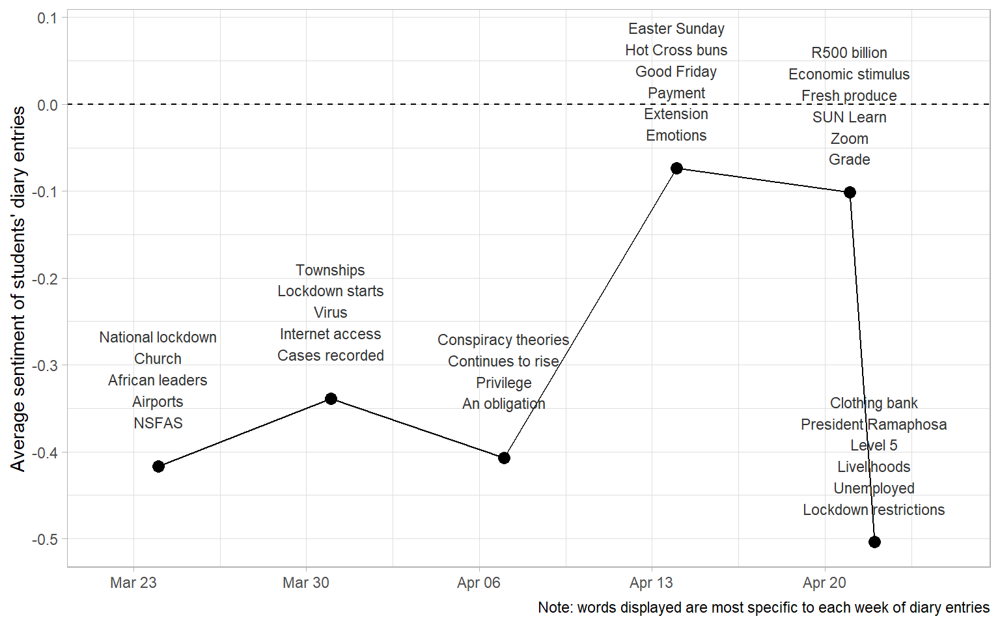

Students Speak
Text analysis of students’ diary entries during the Covid-19 lockdown in South Africa
Students Speak
Hi Johan - here are some visualizations I have put together from your students’ diary entries. I think that they tell quite a nice story. I hope that some are useful. I’ve done them in black and white - I’m not sure where you want to publish them in the end. If you’d like some colour I can add it easily.
I’ve written up the process mostly so that I can remember. The visualizations are at the bottom of the post.
Context
The Stellenbosch students of Economic History 281 were encouraged to keep a diary during the lockdown as the Covid-19 pandemic overtook the world in March 2020. This post is a short text analysis of the content of their diary entries.
Data
The students’ diary entries have been ingested to form a dataset such that each row is one student’s observation on one day. Additional columns specify the date and the week of the log. There are 333 observations in total. Three examples are shown in the table below.
These data were supplemented to include the number of Covid-19 cases in South Africa, the number of deaths, and the number of tests performed. These may provide some context around the change in content of the diary entries over time.
Word Cloud
We start with a word cloud which shows the words used by the students in their diary entries.
The size of the word is correlated to how frequently it is used. The sentiment of the word is scored with the bing sentiment lexicon, a general purpose English sentiment lexicon that categorizes words in a binary fashion, either positive or negative.
We can see that common positive words include “support”, “privileged”, “healthy”, “productive”, and “excited”. Common negative words are dominated by “virus”, followed by “difficult”, “struggling”, and “infected”.
This is slightly more informative than a generic word cloud showing word frequency. However, it should be noted that the words must occur in both the students’ diary entries and the bing sentiment lexicon in order to be shown in the word cloud.
Table @ref(tab:excluded) shows some common words in the students’ diary entries which are excluded from the wordcloud in Figure @ref(fig:wordcloud).
| Word | Number of uses |
|---|---|
| Lockdown | 251 |
| People | 211 |
| Day | 183 |
| Time | 172 |
| Family | 111 |
| Feel | 92 |
| South | 90 |
| Home | 80 |
| World | 78 |
| Days | 71 |
| Africa | 61 |
| Life | 54 |
| Online | 51 |
| 19 | 50 |
| Friends | 50 |
We can also include a conventional word cloud beside the comparison cloud, and shown in Figure @ref(fig:image-grobs).

Evolution of students’ diary entry sentiment over time.
Figure @ref(fig:sentiment) below shows the change in sentiment of the student responses over the course of the lockdown. It requires some explanation: the words used by the students are grouped by week, scored according to a sentiment lexicon, the score is averaged across the week. The points on the graph represent the average sentiment of the students’ diary entries in a particular week.

We can see that at the outset, sentiment is poor, this improves, and then drops dramatically at the end of the period. It is noteworthy that the average sentiment is negative for the entirety of the period, highlighted by the dotted line at zero.
This can be explained by the choice of sentiment lexicon used to score the words. The AFINN-111 dataset is a lexicon of English words rated for valence with an integer between minus five and plus five. The words were manually labelled by Finn Årup Nielsen in 2009-2011. An example of the scores assigned to words in the students’ diary entries is shown in Table @ref(tab:afinn) below.
| Word | Sentiment score |
|---|---|
| Bullshit | -4 |
| Catastrophic | -4 |
| Panic | -3 |
| Fake | -3 |
| Worse | -3 |
| Funny | 4 |
| Fun | 4 |
| Wonderful | 4 |
| Thrilled | 5 |
What are the words most specific to each week of the student diary entries?
The wordcloud in Figure @ref(fig:wordcloud) showed the most common words. What if we want to see the words that are most specific to each week of the diary entries? We can use the tidylo package that provides the weighted log odds ratio for each word across the weeks of diary entries. This provides a quantification of how specific each word is to the week that it is used in. For more information see Fightin’ Words: Lexical Feature Selection and Evaluation for Identifying the Content of Political Conflict by Monroe, Colaresi, and Quinn (2008).
Table @ref(tab:words) below shows the words most specific to each week.
| Week 1 | Week 2 | Week 3 | Week 4 | Week 5 | Week 6 |
|---|---|---|---|---|---|
| African leaders | Lockdown starts | Privilege | Easter Sunday | Zoom | Clothing bank |
| Church | Virus | Conspiracy theories | Payment | R500 billion | Lockdown restrictions |
| Airports | Townships | An obligation | Hot Cross buns | SUN Learn | Level 5 |
| NSFAS | Cases recorded | Continues to rise | Extension | Economic stimulus | Livelihoods |
Nice! We can see that we capture some elements of the experience in each week of lockdown.
Sentiment and week-specific words
This figure superimposes the week-specific words above the line graph that shows the evolution of the students’ sentiment across the weeks.

I think it captures a bit of the experience - at the outset there was anxiety about the lockdown, difficulties with internet access and a worry about the rise in cases. This was followed by conspiracy theories and discussions of obligation and privilege. The collective mood improved toward Easter, and was further buoyed by the announcement of a large stimulus package by the government. Finally there was exasperation about the state of employment and livelihoods.
Comparison of students’ diary entries with Covid-19 statistics.
Figure @ref(fig:context) shows the evolution of the sentiment of the students’ diary entries beside the rising Covid-19 case numbers in South Africa.

It is difficult to conclude about a relationship between the number of cases and the sentiment of the students’ reflections. While there appears to be a relationship between average sentiment and number of tests at the outset of the lockdown, I think this is statistical noise rather than some sort of correlation.
Contextualization of timing of diary entries
The purpose of this selection of figures is to emphasize that the diary entries were recorded at the outset of the pandemic in South Africa. The number of cases was relatively low compared to the steep increase in cases which followed in winter of 2020.
The figures below compare the period of diary entries to the number of cases and deaths in the first year of the pandemic.
I think option two conveys the message clearly and without clutter.
Option 1
Here we have a two panel plot of the Covid-19 statistics and number of diary entries recorded by the students.
Option 2
Next we have a single panel with the period of diary entries superimposed on the Covid-19 statistics.
Option 3
Alternatively we can annotate a thick line to show where the diary entries occur.
Option 4
Alternatively we can have a legend variant of option 2.
Financial markets comparison
Figure @ref(fig:fin-mkt-comp) shows the mean sentiment of the students’ diary entries alongside the JSE All Share Index for the same period, as well as the Rand to US Dollar exchange rate. Several students question in their entries what will happen to the stock market, with one stating, “I was looking at good stock picks on the JSE today. Every disaster can be an opportunity…”.
Again the trends displayed may constitute statistical noise. The JSE was rising out of an enormous trough created as investors panicked with Covid-19 spreading into Europe and the US. The Rand is a notoriously volatile currency. Yet, these trends are interesting to show in the context of the early weeks of lockdown.
Interactive figure
We can also make this a little more attractive as an interactive chart with some colour and hover labels.
Figure @ref(fig:interactive) shows the same information as above with a hover field to show the week-specific words. Mouse over the points to see the words most specific to each week and the average sentiment of the students’ diary entries.
Interctive figure